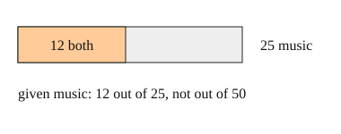

Part of Reading Probabilities From Counts. Answer in the chat (1: ..., g: c), add sure or guess after any answer, and say done when finished.
Last time: of the 25 music students, what fraction also take art? You said b) 12/25, and it is.

Often you learn one thing about a person and want to update. "Given music" means: forget everyone else, and treat the 25 music students as the whole (notes 3). Then count how many of them have the other trait:
P(art given music) = both / music = 12/25
Q1. In a class of 40, 12 play chess. 3 of those 12 also play piano, and 8 students play piano in all. What fraction of the chess players play piano?
3/12 = 1/4 (sure)
Right: the 12 chess players are the group, and 3 of them play piano (notes 3).
Q2. Same class. What is P(chess given piano)?
3/12, the same as piano given chess (sure)
You wrote "the same as piano given chess". Both use the 3 who do both, but "given" picks the group you divide by (notes 3). Which group does "given piano" pick, and how many are in it?
Q3. In your own words: why does P(A given B) divide by the number with B and not by the whole group?
given B means we only look at the B group, so the B group becomes the new whole
Right: "given B" shrinks the whole to the B group (notes 3).
1 in 100 people in a town has a rare cold. A test catches 9 in 10 of the people who have it, but also flags 1 in 10 of the people who do not. Of the people the test flags, about what share have the cold?
a (guess)